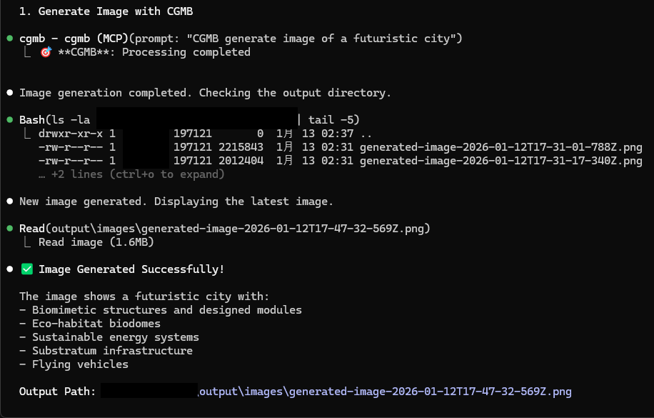
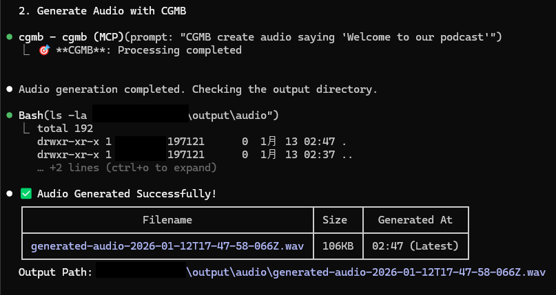
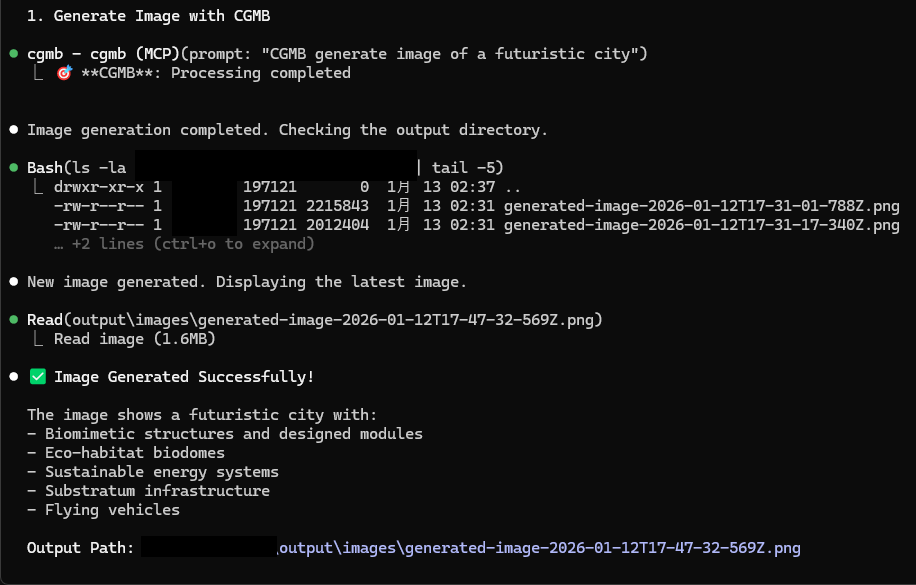
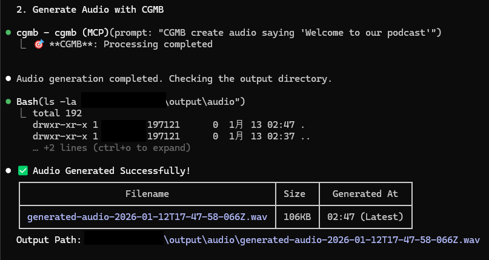
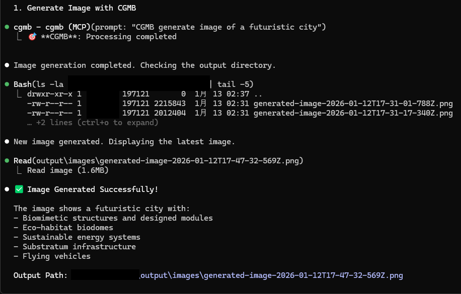
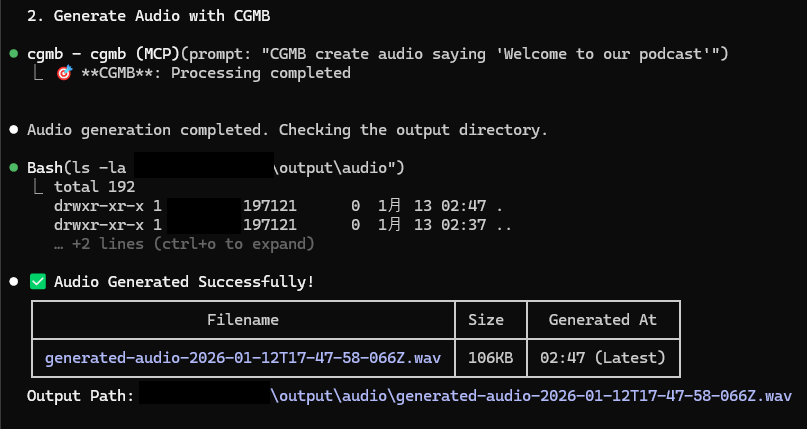

Claude-Gemini Multimodal Bridge — search, reason, and generate (image/audio/PDF) in one workflow.
npm install -g claude-gemini-multimodal-bridge
Add your architecture / image / audio screenshots here (replace file names).


Tip: Put screenshots in docs/ as architecture.png, image-demo.png, audi